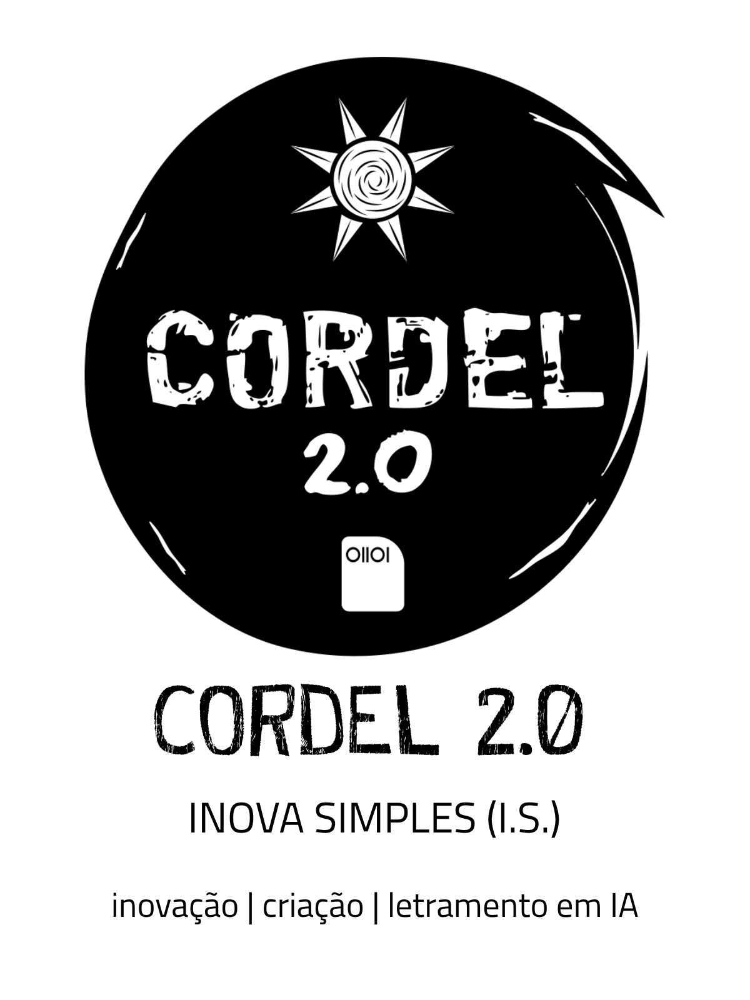

Pesquisa interna · comunicação
O que é que o Cordel 2.0 comunica pra você?
Esta é uma pesquisa interna para avaliar como estamos comunicando a proposta de valor do Cordel 2.0. É rápida: um vídeo de 1 minuto e duas perguntas de seleção múltipla. Leva cerca de 3 minutos.
Muito obrigado! 🌵
Sua percepção acabou de virar combustível pra afinar a forma como o Cordel 2.0 se comunica. De coração: valeu por emprestar seus minutos e sua leitura.
— Equipe Cordel 2.0 · Inova Simples